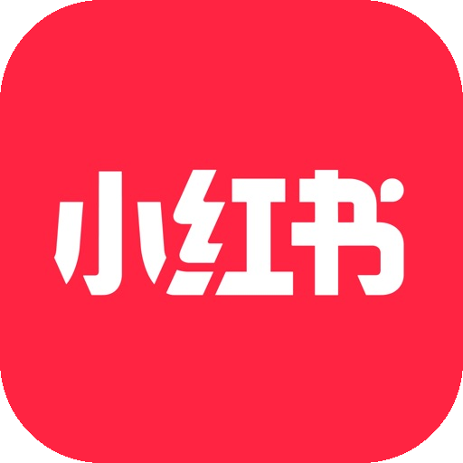
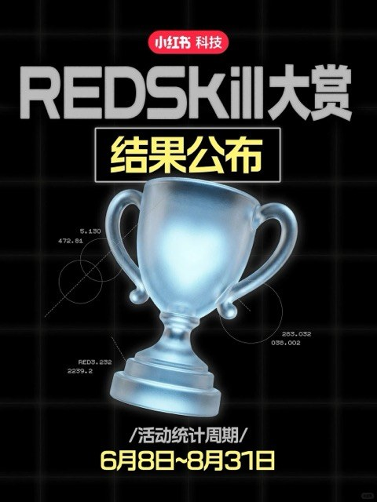
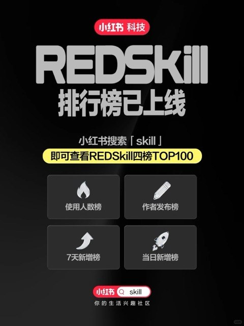
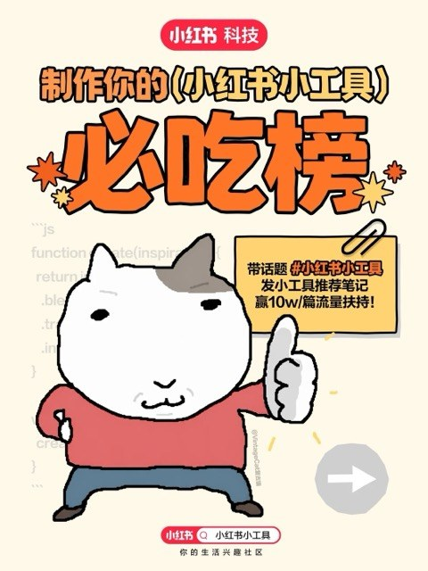

Builder Hub — RedSkill／小工具我的角色 · AI 产品经理 / 开发者端
小红书 · AI 创作者生态
让开发者的
AI 作品进入社区
RedSkill 让开发者发布可供 Agent 使用的 Skill；小工具让用户在小红书内直接体验开发者做出的应用。我负责开发者侧开放能力建设，覆盖作品经营、发布基础设施与 AI 能力。
作品发布把工具与 Skill 带进社区，让用户能发现、体验。
作品经营让内容传播与作者连接回到同一条链路。
能力开放为开发者提供稳定可用的基础设施与 AI 能力。
千万级累计使用用户
5万+创作者发布的小工具
10万+创作者发布的 Skill


